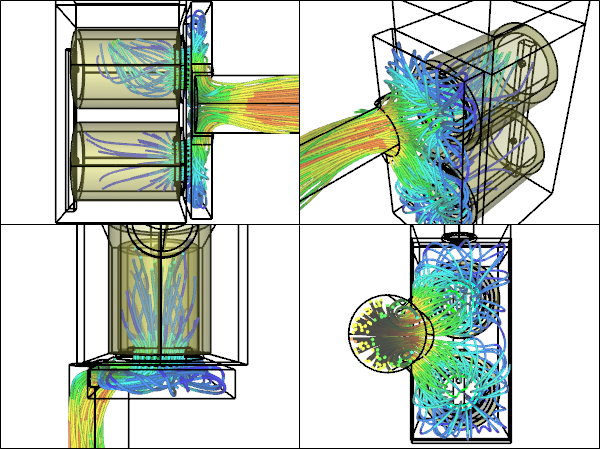
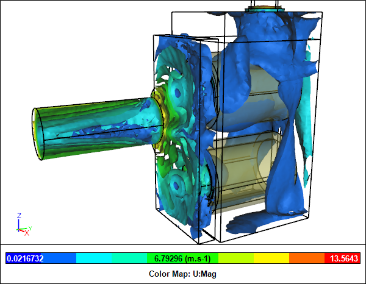

CFD Simulation of Airflow Through Filters in a Dust Collector
After using Computational Fluid Dynamics (CFD) to simulate the blower and cyclone in Matthias Wandel's "Small Dust Collector" we next turn our attention to the last remaining major component - the twin filter assembly. The filters remove fine particles that escape the cyclone, leaving the air to pass through the blower and exit to the atmosphere.
CFD Simulation of a Filter Assembly for a Dust Collector
3D Model Construction
The twin filters were modeled as porous media using a multi-volume flow domain where the filters are represented as separate volumes. The geometry was created from scratch using Matthias' plans.
Dust Collector Filter AssemblySketchUp Assembly Model
Once the flow leaves the two filter cores it recombines into a single outlet through a manifold. In the complete system the manifold outlet is coupled directly to the inlet of the blower, hence its off-center position.
CFD Filter Assembly Flow Domain
Performance Test
For porous media we need to define the permeability of the filters in our model. Assuming Darcy's Law and assuming the filters conform to the HEPA standard we find that the permeability is 3.79 x 10-5 m2. Permeability is a function of volume flow rate and pressure drop, so ideally it needs to be modified for each flow condition. However, the range over which the permeability changes for the flow rate we are considering is small, so for this study we will assume it is constant.
Recall our previous CFD simulation for the cyclone revealed that the operating condition for the complete system should correspond to a flow rate of less than 0.065 m3/s. Hence, for this study we ran 9 simulations in the range 0.01 - 0.1 m3/s.
Pressure Drop vs Volume Flow Rate for the Filter Assembly
Summary
The results show that as the flow rate increases through the filters the pressure drop also increases, as we found for the cyclone. However, notice that the pressure drop for the filters is insignificant when compared to the pressure drop for the cyclone. At 0.06 m3/s the pressure drop for the filters is only 4% that of the cyclone.
Comparison of Pressure Drop for Cyclone, Filters, and Cyclone + Filters vs Flow Rate
Combining the pressure drops for the filters and for the cyclone gives the total pressure drop curve. The intersect of the total pressure drop curve with the blower's fan curve gives the operating conditions at a flow rate of 0.063 m3/s and a pressure rise of 2900 N/m2. Note this does not account for the length or type of hose connected to the cyclone inlet, which Matthias tells me contributes more pressure drop than the filters.
Pressure Drop for Cyclone + Filters and Pressure Rise for BlowerIntersection indicates operating conditions
Flow Visualization
Filter Box StreamlinesFilter Assembly CFD simulation for 0.06 m3/s flow rate
Manifold StreamlinesFilter Assembly CFD simulation for 0.06 m3/s flow rate
 Velocity VectorsFilter Assembly CFD simulation for 0.06 m3/s flow rate
Velocity VectorsFilter Assembly CFD simulation for 0.06 m3/s flow rate
Clipped Velocity VectorsFilter Assembly CFD simulation for 0.06 m3/s flow rate
Velocity Iso-SurfacesFilter Assembly CFD simulation for 0.06 m3/s flow rate
Clipped Velocity Iso-SurfacesFilter Assembly CFD simulation for 0.06 m3/s flow rate
Pressure Iso-SurfacesFilter Assembly CFD simulation for 0.06 m3/s flow rate
Clipped Pressure Iso-SurfacesFilter Assembly CFD simulation for 0.06 m3/s flow rate
Notes
The filter assembly geometry was created in Caedium Professional. The CFD simulations were automated using a Python script and were performed using the incompressible, steady-state RANS solver with porous media, and the k-omega SST turbulence model.
Feedback
Questions? Ideas? Problems?

Recent blog posts
- CFD Simulates Distant Past
- Background on the Caedium v6.0 Release
- Long-Necked Dinosaurs Succumb To CFD
- CFD Provides Insight Into Mystery Fossils
- Wind Turbine Design According to Insects
- Runners Discover Drafting
- Wind Tunnel and CFD Reveal Best Cycling Tuck
- Active Aerodynamics on the Lamborghini Huracán Performante
- Fluidic Logic
- Stonehenge Vortex Revealed as April Fools' Day Distortion Field
 Get our Blog feed
Get our Blog feed
Comments
Other Separating Options
Excellent work and interesting to see the flow and impact of the filter stack on a dust collection system. One question I've wondered about is whether the cyclone is the best separation method for wood dust & chips and if possibly a swirl tube separator might be more effective with less impact on pressure drop. I've not seen such designs pursued in woodworking (which may or may not be an indicator of appropriateness) nor do I have the time or knowledge to test out this theory myself, but seems to be a more friendly package especially in smaller, lower ceiling shops. Any thoughts?
Swirl Tube vs Cyclone
Good question. Sounds like a good topic for a future study - stay tuned!